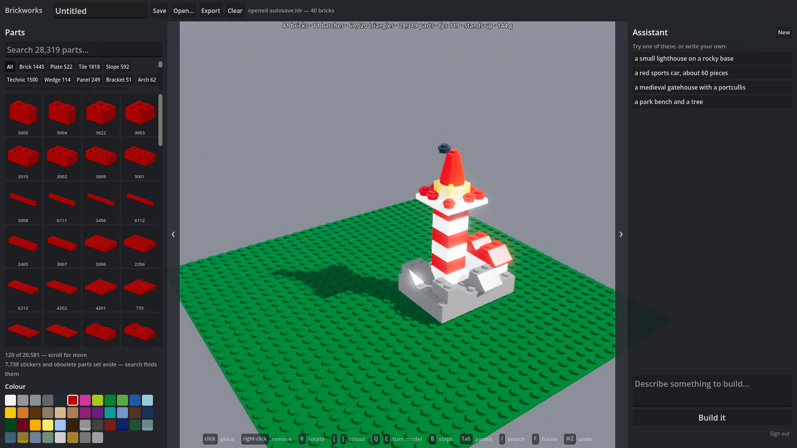

Every brick, at the size it really is.
A construction system with every modelled part at true dimensions, real connection rules, and a design assistant that only hands you models which actually hold together.
Runs in the browser. No account needed to build.

Measured, not approximated
The dimensions were read off the part geometry rather than copied from a reference, and the tests assert them so a library update cannot move them quietly.
| Feature | Brickworks | Specification | |
|---|---|---|---|
| Stud pitch | 8.00 mm | 8.0 | exact |
| Brick height | 9.60 mm | 9.6 | exact |
| Plate height | 3.20 mm | 3.2 | exact |
| Stud diameter | 4.80 mm | 4.8 | exact |
| Wall thickness | 1.60 mm | 1.6 | exact |
| 2 × 4 brick | 32.00 × 16.00 mm | 32 × 16 | exact |
Sizes are nominal rather than as-moulded: a real 2 × 4 measures 31.8 mm, because there is about 0.1 mm of clearance per side so bricks do not jam. Nominal is what makes parts tile exactly on the lattice, and it is what every brick CAD tool uses.
What it does
The engine underneath is exact, and everything above it is built on that rather than on an approximation of it.
Build by hand
Point at a face and the part goes against it. Positions are whole numbers on a 2 LDU lattice, so collision is exact comparison with no tolerance and a model saved today loads identically tomorrow.
Every part, findable
All 28,319 searchable as you type, with previews rendered live from the real geometry in whichever colour you have picked.
A design assistant
Describe something and watch it appear. It proposes placements; the app checks every one against the real lattice and hands back the specific brick and reason when something will not hold.
Will it stand up?
Live checks for a joint carrying more than its studs hold, a load hanging past its footprint, and a build stacked too high over too small a base.
Yours to take away
Models are saved as LDraw .ldr, so what you build
here opens in LDView, LeoCAD, Studio or Mecabricks — and what you
made there opens here.
Real connections
Studs, tubes, Technic pin holes and axle holes, recovered from the primitives each part is drawn with rather than guessed at from its bounding box.
Tiers
Building is free and always will be. The assistant costs real money to run, so it is the thing behind an account.
Free
- The whole builder
- All 28,319 placeable parts and 322 colours
- Save, reopen and export as
.ldr - Stability checking
- Build instructions, step by step
- No design assistant
Signed in
- Everything above
- The design assistant
- 60 designs a month
Models are saved on your own machine, not ours — that is what lets the free tier keep them without an account.